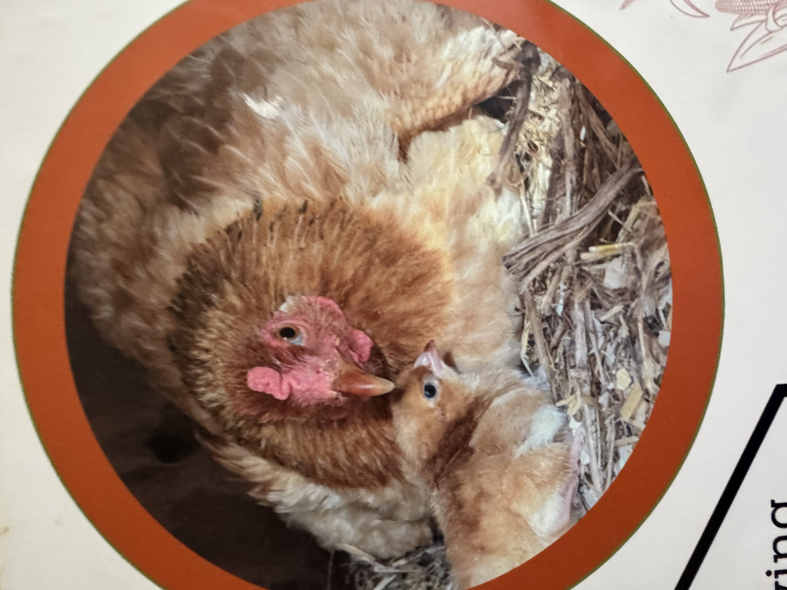
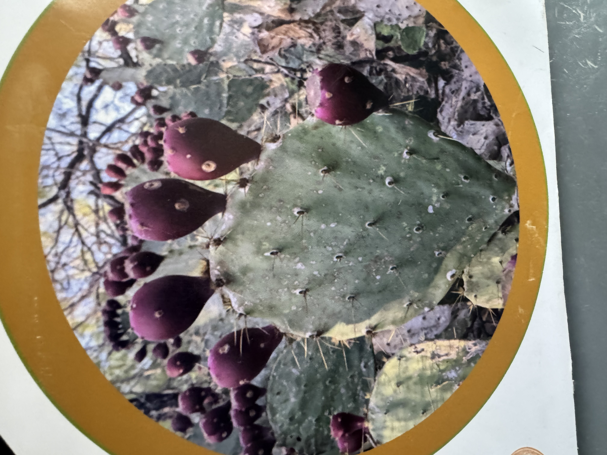

Seasonal Veggies
- Regular plantings September to April
- Harvest season November to June
Small Livestock
- Mobile chicken brigade
- Benefits include soil fertility, weed/pest management, eggs
Soil Health
- Cover crops
- Composting local waste streams
- Tarping for weed management
Seed Saving
- Encourages local adaptation
- Reduces input costs
- Deepens cultural connections
Water Conservation
- Drip line irrigation
- Mulching with biodegradables
- 3000 gallon rain harvest tank
Natives in Farms
- Insectary strips & windbreaks
- Plans for edible natives



